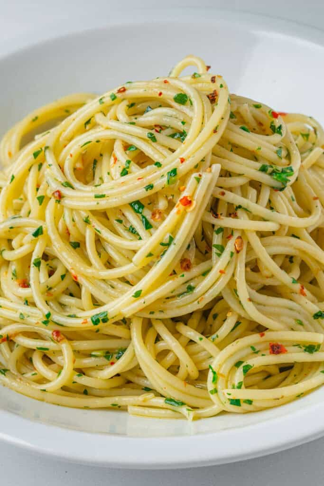

Spaghetti Aglio e Olio is a simple Italian classic that always hits the spot. Made with only 5 basic ingredients and ready in 10 minutes, it’s known to be an Italian’s midnight snack 😊
Cook the spaghetti in a large pot of salted boiling water until it is 1–2 minutes shy of al dente
Scoop out 1 cup of starchy pasta water right before draining. Do not skip this step. Drain the pasta.
Stir in the red pepper flakes and cook for another 30 seconds until fragrant. Remove from heat if the pasta isn't ready yet to prevent burning
Add the drained spaghetti and 1/2 cup of the reserved pasta water into the skillet with the oil and garlic. Turn the heat to medium.
Toss and stir vigorously for 1–2 minutes until the oil and water emulsify into a glossy sauce that coats the noodles. Stir in the parsley and serve immediately.